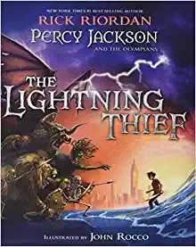
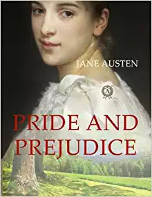
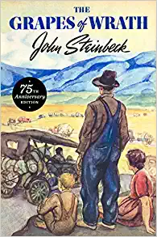
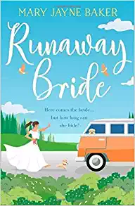

Staff Picked Favorites
The Top Three Favorites


These books are some personal favorites from our staff members, taken from a general poll of our employees. We find here some of the favorite classics of teens and adults, such as the Harry Potter series, perhaps one of the most well-loved book series of all time. These are books recommended by book lovers, for book lovers!
Some of Our Favorite Classics



This trio of terrific books are all decades old, but still have not lost their place in literary relevance. The writing styles, the stories, the way that the author confronts issues and problems in society at the time, all and any of these are absolutely phenomenal in these books. They together make a story so fantastical and incredible that it has withstood the test of time. Enjoy these timeless pieces of art!
The Best Vacation Books


Want a little bit of light and refreshing reading during your next vacation? These are favorite vacation books amongst our employees here at the store, varying from comedy to the wonderful tale of a young girl coming into her own. Each of these books will grab your attention for hours, while not detracting from that sunshine and ocean breeze. Put your toes in the sand and your nose in a good book!
View our Other Books, Best Sellers and Staff Picks, Through these Links: